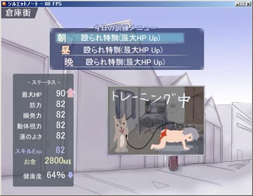
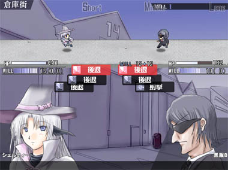
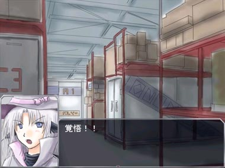

シルバーセカンド開発日誌

シルエットノート追加シナリオにミニゲーム的な
簡単な育成シミュレーションを追加中です。
主人公、村上シシトを育成して敵と戦わせるという感じの内容です。
というのも、シルノの基本戦闘システムの方はリスバトルでレベルが
インフレしちゃってるし、個人的にイマイチなところもあったので
テコ入れ的に新しく導入することにしました。
といいますか、ぶっちゃけエイプリルフールの
シルフェイド学院物語を見て
面白そうだなあとちょっと思っていたので作っています！
それに、シナリオ作りを延々と続けているだけでは
作る身としても飽きが来ます！
やっぱり新しいことに挑戦しないとやる気が出ません！
アドベンチャーゲームだけ作り続けることができないのは
たぶんこの無性にたぎる挑戦癖（もとい、飽き性）が
あるからなんだろうなという気もします。
それにしても、基本的な育成シミュレーションを作るのは、
RPGに比べたら楽そうだなあということが分かりました。
プログラミング技術も必要な絵の量もほどほどですし、
表現したいシーンだけをイベントとして作って
載せられるので、繋ぎとして作られたようなシーンの
ダラダラした感じも最小限におさえられます。
何よりイベントがパーツ単位に作れるので、後からの追加・修正が楽！
結構よくできたシステムだなぁと思います、
まあ最近は育成ゲームもあまり見ない気がしますけれど。 
※画面は顔グラフィックテストです。
シルエットノートの追加シナリオを書いたり
WOLF RPGエディターのプチ改造をしたりと地道に作業を続けています。
でもそんなときほど日誌のネタがありません、なんせ
「シナリオ書いてます！」で終わってしまいますから。
いちおう、4/23 → 4/29までの進行状況は
「シルエットノートシナリオ 0.2シークエンス分くらい進行」
「RPGエディター 小改造」
くらいです。
割としっかり（？）お笑いシナリオ書こうと思ったら、
シル見も同じくらいですが、1シークエンスあたり
一ヶ月くらいかかってしまいそうです。
特にシル見の方だと、シナリオを書いても
それをツクールに入力する作業が極端に面倒臭いので、
自作ツールへ移行したいなあと思う心もあります。
シルエットノートの方は、今で言う二次創作機能
（テキストファイルをイベントデータに変換する機能）
があるので、シナリオだけ書けば顔グラフィックとメッセージ表示を
全部自動で打ち込めてとても早い！
これならシナリオ作成に集中できるのでイヤッホーウです。
人数いっぱいの開発サークルというわけではないので、
開発のムダは限りなく省いていきたいと思います！
シルエットノート、顔グラフィック＋シナリオ追加中。
色々とまたちょっと忙しくなったり、シナリオ作りに対するやる気が
出なかったり、元気が出なかったりでどうにも足踏み状態です。
最近ずっと雨 or くもり続きだからでしょうか。
それでも毎日少しずつシルノ追加シナリオ進行中です。
シナリオを考えるのは、可能な限り元気な状況でやらないと
シルノ表シナリオやクリフ迷宮録のメインシナリオみたいに
微妙にダーク混じりな内容ができがちなので避けたいのですが、
作るのは作るで意外なほどに精神力を使うし、
完成するものも精神状態に左右されすぎるので、
やっぱり笑いってのは難しいなあと思います。
うまく作れると何物にも代え難いほどに楽しいんですけれどね！
シルノ表シナリオなんかは、凄く忙しい時期に作っていた気がします、
しまいにはちょうどその時期に血便も出たりしましたし、
表シナリオの内容としても確かに何となくそんな感じ。
某あの少女が死ぬシナリオは血便を暗示したものです、間違いない！！
その点、プログラムは疲れてても元気でも基本的に完成品として
ほとんど同じものが作れるので、楽でいいです。
プログラムなら朝から晩までというか徹夜でやってもガンガンできる！
シナリオは徹夜でやっても誰でも書ける内容しか出来上がらないので
やっぱり違います。絵を描くのも疲れてるときは避けたい！
結構ボロボロのときに描いていた千夜一夜（旧日誌参照）の
顔グラフィックとか今冷静になってみると、自分で見ても
ひどいヤツが混じってる気が！ギャアアアアー！！
シル見は解像度が低いから救われてるなぁ。■
2007-04-10 (火) シルエットノート追加話▼
シルフェイド人物録 ナダ
出番が意外とあるので割と人気なお方です。
シルエットノート追加シナリオはぼちぼち進行中です。
基本的に、新キャラ増やしてマンネリ化をカバーするのが
主戦法なので、今回も色々増えそうな感じです。
でもたまに顔グラフィック描くと下手で泣けます。
チラっとやってみたらシシトの某手術をしたのが
エシュター先生だったりとか
自分でも忘れてた設定が出てきてンワーオです。
名前だけ出てたんだ！ 知らなかった！
とりあえず、WOLF RPGエディターも並行してぼちぼちやりつつ、
コツコツ進めていこうと思います。■
2007-01-03 (水) 千夜もシルエットノートも▼
シルエットノート追加シナリオ
謎の魔法少女シェルティーと黒服の戦い
シルエットノート、一日30行ずつでもシナリオ書いていけば
半年で1シークエンス分くらい書けるじゃないか！
という勢いでシルエットノート追加シナリオも実は
まだしっかり開発中です。実際疲れて何も思いつかないときや
時間ないときは結局何も進まないんですけどね！
でもよくよく考えてみると発売からすでに
1年以上も経っちゃってます、トホホ。
それはそうと千夜一夜で使ってる開発ツールなんですが、
色々調べてみると他のところも意外とRPGツクールもどきを
作ってらっしゃったりするので、これなら公開行けるか！？とか
ちょっと考え中です。もっとも、一般的な形になってないので
それを直さないことには何ともしがたい状態ですけれど。
ちなみに探して見つかったRPGツクール系ツールはこちら
Rmake
http://www.rmake.net/ (インターネットアーカイブ)
まだα版だそうです、実装されてるコマンドなどは
よく見てませんが、オープンソースだし発展性有り？
プラグインという発想が「おおっ」と思いますね。
J-RPGPlayer(※閉鎖)
http://hp.vector.co.jp/authors/VA020046/
のJ-RPGCreaterの項目です。
一昔前のツクールライクなツールです。初心者向け？
これで開発されたゲームがすでにいくつか掲載されています
なおウチのは基本コマンド（文章表示だのピクチャだの）はありますが、
戦闘システム、コマンド表示などは全部自作でよろしく、
という系統ですのでたぶん熟練者向けです。
メニューとか戦闘システムはコモンイベントで作成、という感じ。
Rmakeを見ると、プラグインで色々機能を付け替えできる
開発ツールを設計すれば良かったなあとか思います。
まあ、次に機会があればプラグインも考えたいなぁ……なんて。 
シルエットノートも追加シナリオをちょくちょく開発中。
アル幻と同時公開くらいの勢いで出せればいいなあという感じです、
ライセンスキーは大事にとっておいてください。
（といっても、一度ライセンスを入力していれば
ランチャー起動して確認することができますけれど）
アルバート幻想譚（仮）のシステムを考え中なのですが、
幻想譚のシステムと同じにしようかやめようかどうかと
現在迷っています。
変える場合はリアルタイムシミュレーション風なものを
想像しているのですが、自分の直感として、
そういうシミュレーションに慣れてない人には
かなりキツそうな予感がするのと、こういうのは大抵負けた原因が
ハッキリしづらいのがちょっと欠点だと思ってます。
簡単にすると、突っ込むだけで勝てたりして工夫しがいがないし、
難しくすると延々と詰まる可能性が高くなりがちです。
それに自分自身、そういうバランス調整のコツがゼロなので
恐ろしい事になる可能性があります。
同じにする場合は、意外と要望があった
味方3人パーティを実現しようと思っています。
ついでに敵を最大5体出現くらいにして全体攻撃が
爽快になるようにしたり、面白そうなスキルを足したり。
あとは、かなり強い敵にも挑戦できるようにしたりする予定です。
当然の話ですが、前作から何でもかんでも変えればいいとは限らず、
どんなときでも、どういうものが一番面白くなるかということを
常に意識して作らなければなりません。
アルバート幻想譚（仮）はある意味、シルフェイド幻想譚の
ファンゲーム的な存在に近いのもありますし、
システムはそのまま流用でもいいかなとか思い始めています。
というか、こうやって書きながら頭の中を整理している内に、
ますます同じシステムにした方がいいような気がしてきました。
■
2005-12-27 (火) サポート業務ガンバってます▼
超巨大ナナシ 天井突き破ってます（ウソ）
寒くて冬眠しそうです、ヤバいです。
外見たら雪が積もってます。
低温注意報とか着雪注意報、暴風雪警報とか
見たことない注意報警報がいっぱいです。
現在シルエットノートのサポートでアヘアヘ行ってます。
原因不明なバグもまだ残ってる状況、
OS依存のバグとかどうすれば直るんだ……。
それはそうと今週、間違えて残しちゃったままの
「テキストデータをイベント（マップ）データに変換する処理」
が、皆さんの要望により2次創作キットに進化しました。
これは製品版（最新版）のゲーム開始画面で、F5を押しながら
ゲーム開始かコンティニューすると、txtで書かれたセリフが
顔グラフィック付きで再生されるというシロモノで、
皆さん色々作ってくださってるようです。
シルフェイド同盟に、テキストデータを
アップロードできるようなCGIを設置したので、
そちらもご利用下さると幸いです。
面白いモノは2次創作サンプルデータとして
製品版に同梱させていただきます。
2次創作コンテストとかやったらどうですか！？
というようなご意見もいくつか頂いてますが、
今のところそれどころではないので、検討だけさせていただきます。■
2005-12-03 (土) シルエットノート 販売開始▼
いよいよ明日、シルエットノート製品版の正式公開です。
ネタバレに関しては、明日から解禁ということにします。
二次創作やら攻略記事（レビュー？）やらについては
ギャグネタ・シナリオの完全再現や詳細解説でない限りは
ある程度自由にやってくださって構いません。
ただ、詳しいところはなるべくボカしてくれた方が嬉しいかな、
という感じです。
あと、現段階で結構アンケートでご意見を頂いておりますが、
ボリュームがもっと欲しいというご指摘が多いです。
プレイ時間は約5～7時間程度（真エンディング見ようとしたり
コンプリート目指すともっと長いと思います）ですので、
購入しようかどうか迷ってらっしゃる方はその点も
検討に入れておいてください。
小規模販売のアンケート途中集計結果によると、
「シル見と同じ」か「シル見よりやや面白い」程度の
質は確保できているようですので、その点はご安心を。
ただ、やっぱり一部の人にはウケが悪い可能性はまだあるので、
その点も覚悟しておいてください。シモなネタは減りましたが
大人向けなネタが増えたので、高校生以上の方のほうが
楽しめるかと思います。
スタッフロール
現在製品版のバグ取り中＆体験版制作中です。
公式サイトは一通り完成しました。
販売システムや内容にバグがある状態で
大々的に売り出すのもアレなので、
小規模な「第一次販売」（バグ含む可能性アリ、
早く遊びたい人＆覚悟がある人＆
協力してくれる人だけ買って下さい）と、
そのとき出てきたバグを潰した後の「本格販売」とで
段階を分けて公開しようかな、とか考えています。
大々的な初期バグがあるまま思いっきり配布したら
エライ事になってしまいますし。
第一次販売は掲示板などで小規模に、
本格販売はその数日後に開始、といった具合です。
ただし一次販売でも値段は本格と同じく1500円ですので、
心配な方は後に買った方が安心です。
つっても、バグがある可能性が残ってるのに
買ってくれる人なんていなさそうな予感もしています。
そもそも非常に身勝手なお願いですし。
誰も買わなくても、それはそれで当たり前なことだと思うので、
その間もテストプレイを重ねてバグ取りを進めたいと思います。
いちおう見つかるバグは潰してますが、
決して100%は無いので石橋をちょっとずつ叩きながら
進めていきたいのです、なんせ今回お金が関わります。
とりあえず、30日か来月始めくらいに
掲示板か日誌かどこかで第一次販売を始めると思います。
ここ数日はリアル事情が忙しくなりそうなので
たぶん始めません。■
2005-11-23 (水) 製品版テストプレイ中▼
バッドエンド
ようやく製品版の方が一通り完成したので
最終テストプレイ中です。
他の方にもお願いしています。
販売システムも準備完了＆テスト中ですので、
あとは体験版を作るだけです。
結局、購入方法としては
1500円以上のウェブマネーを準備する、
ついでに製品版データをダウンロードしておく
↓
購入ページでプリペイド番号入れて
ライセンスキー買う
↓
製品版データのランチャーにライセンスキー入れて
解凍ボタン押すとゲーム解凍
↓
遊ぶ
という手順になりました。
ライセンスキーは人によって違うのが出力されます。
体験版の方はホントに動作確認用と
ウェブマネーの購入方法説明用という感じで
作りたいと思います。
というか、まだ何も打ち込みしてなかったり。
月末販売開始はできても
体験版配布が間に合うか心配です。
Copyright © SmokingWOLF / Silver Second
 カテゴリ: シルノ
カテゴリ: シルノ カテゴリ: シルノ
カテゴリ: シルノ